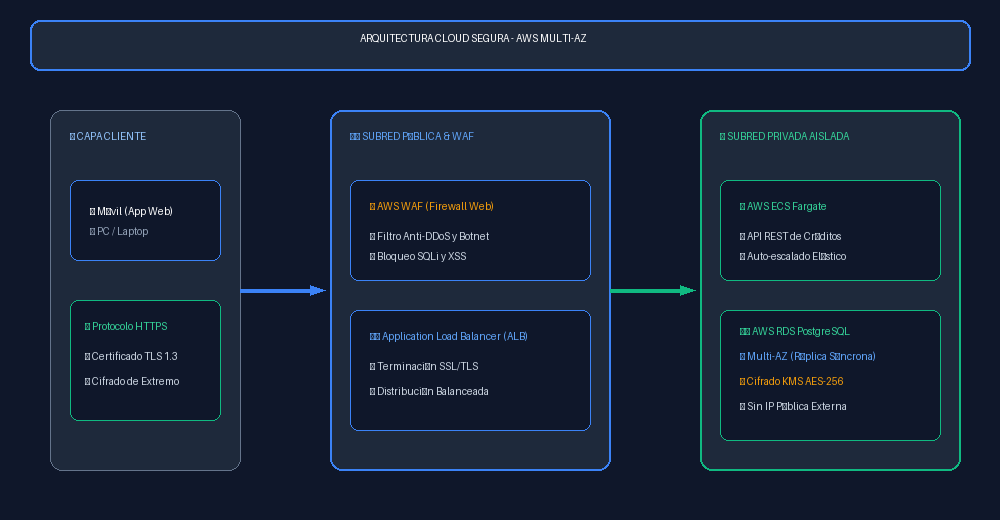
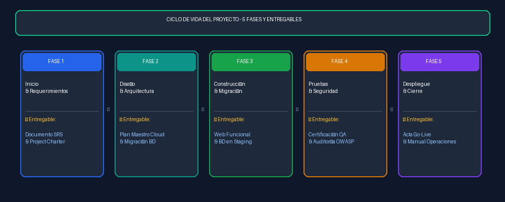
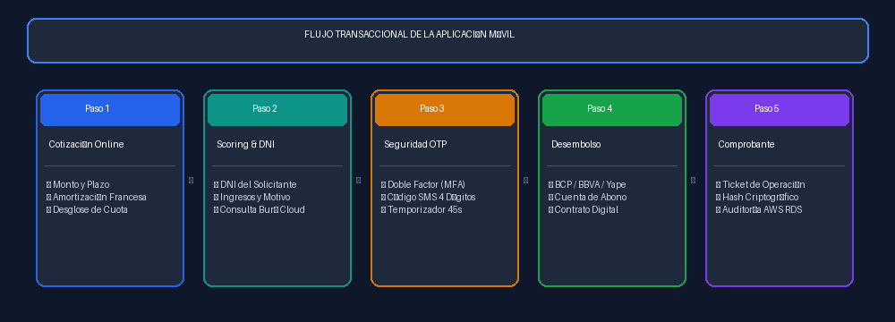
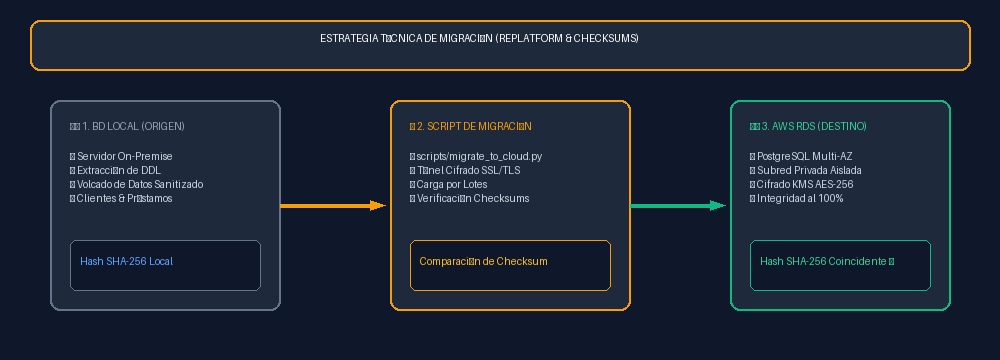

Ingeniería de Sistemas e Informática
Gestión de Proyectos de TI / Arquitectura de Software y Cloud Computing
INFORME TÉCNICO Y MANUAL DE FUNCIONAMIENTO:
PLATAFORMA FINTECH DE PRÉSTAMOS RÁPIDOS Y MIGRACIÓN DE BASE DE DATOS A LA NUBE
Clasificación de Proyectos TI • Componentes Cloud • Matriz RACI • Ciclo de Vida • Manual de Usuario • Checksums
1. Resumen Ejecutivo del Proyecto
El presente proyecto desarrolla una solución integral de tecnología financiera (Fintech) denominada PrestaFast Cloud, orientada a la colocación y desembolso digital de créditos de consumo en menos de 60 segundos. Como componente medular de infraestructura, se ejecuta el plan de migración de la base de datos relacional local (On-Premise) hacia una arquitectura gestionada en la nube con Amazon RDS PostgreSQL bajo un esquema de Alta Disponibilidad (Multi-AZ).
La solución elimina los cuellos de botella de hardware físico, reduce a cero el riesgo por cortes de energía o fallas de disco local y garantiza cumplimiento estricto de ciberseguridad con cifrado KMS AES-256 en reposo y TLS 1.3 en tránsito.
2. Clasificación de los Tipos de Proyectos de TI Involucrados
| Tipo de Proyecto TI | Alcance y Justificación Técnica |
|---|---|
| 1. Desarrollo de Software / Web App | Construcción de la solución web transaccional Mobile-First con cotizador interactivo de amortización francesa, evaluación en tiempo real y generación de contratos digitales. |
| 2. Infraestructura y Migración Cloud | Aprovisionamiento de Red Privada Virtual (AWS VPC), balanceadores de carga elásticos (ALB), cómputo en contenedores (AWS ECS Fargate) y migración de base de datos a AWS RDS PostgreSQL Multi-AZ. |
| 3. Ciberseguridad y Cumplimiento Fintech | Implementación de autenticación de doble factor (MFA / SMS OTP), cifrado de extremo a extremo (TLS 1.3 / KMS AES-256) y protección contra vulnerabilidades OWASP Top 10 con AWS WAF. |
| 4. Integración de Sistemas e Interoperabilidad | Conexión con burós de crédito (scoring crediticio) y pasarelas de desembolso interbancario inmediato (BCP, BBVA, Interbank, Yape / Plin). |
3. 3 Componentes Clave de Infraestructura Cloud

Almacenamiento relacional transaccional (cumplimiento ACID). Cuenta con réplica síncrona en una segunda zona de disponibilidad para Failover automático sin caída del servicio, backups diarios automatizados con restauración puntual (PITR) hasta por 35 días y cifrado nativo KMS (AES-256).
Ejecución de los microservicios backend desacoplados. Ofrece auto-escalado dinámico según la carga de peticiones, inmutabilidad de código con Docker y reducción de costos operativos por modelo Serverless.
Aislamiento estricto de la base de datos en subredes privadas sin IP pública. El Application Load Balancer distribuye el tráfico con certificados SSL/TLS y el firewall WAF bloquea ataques de inyección SQL y XSS.
4. Matriz de Roles y Asignación de la Primera Tarea (RACI)
| Rol | Primera Tarea Asignada (Hito de Inicio) | Entregable de la Tarea |
|---|---|---|
| Project Manager | Elaborar y formalizar el Project Charter y el Backlog de Sprints. | Project Charter firmado y tablero Jira. |
| Arquitecto Cloud / DevOps | Diseñar la topología de red y aprovisionar la Red Privada (VPC e IAM). | Scripts Terraform de infraestructura base. |
| DBA / Data Engineer | Ejecutar el diagnóstico de la BD local y generar el dump DDL depurado. | Reporte de auditoría y script DDL sanitizado. |
| Desarrollador Full Stack | Construir el cotizador interactivo con Amortización Francesa. | Prototipo funcional de la interfaz en Git. |
| Especialista en Seguridad / QA | Definir matriz de requisitos de seguridad y plan de casos de prueba. | Documento de Políticas y Matriz QA. |
5. Ciclo de Vida del Proyecto (1 Entregable Clave por Fase)

| Fase del Ciclo de Vida | Objetivo Principal | Entregable Formal Único |
|---|---|---|
| Fase 1: Inicio y Requerimientos | Definir alcance, reglas financieras y viabilidad. | Documento SRS y Project Charter. |
| Fase 2: Diseño y Arquitectura | Diseñar topología Cloud, base de datos y UI. | Plan Maestro de Arquitectura y Migración de BD. |
| Fase 3: Construcción y Migración | Desarrollar el software y migrar la BD en Staging. | Plataforma Web Funcional y BD en Staging. |
| Fase 4: Pruebas y Seguridad (QA) | Validar cálculos financieros y ciberseguridad. | Informe de Certificación QA y Auditoría OWASP. |
| Fase 5: Despliegue y Cierre | Corte (Cutover), pase a vivo y entrega operativa. | Acta Oficial de Pase a Producción (Go-Live). |
6. Manual de Uso y Funcionamiento de la Plataforma Web Móvil

El cliente selecciona el monto con los chips rápidos (S/ 1,000, S/ 3,000, S/ 5,000, S/ 10,000, S/ 20,000) y el plazo (6 a 36 meses). El sistema calcula la cuota fija mensual mediante la fórmula C = P * [r(1+r)^n] / [(1+r)^n - 1]. Al pulsar "Ver Tabla de Cuotas Detallada", se despliega el cronograma completo cuota a cuota.
Se ingresa DNI, teléfono celular, nombres, correo e ingresos. Al presionar "Evaluar Crédito en Tiempo Real", se procesa el perfil con scoring crediticio vía API.
Se solicita el código de seguridad de 4 dígitos enviado por SMS al celular registrado, con contador de tiempo de 45 segundos y auto-enfoque en cada celda.
El solicitante elige entre BCP, BBVA, Interbank o Yape/Plin, ingresa su cuenta y valida el pagaré digital cifrado.
Se emite el comprobante de operación con Hash Criptográfico Cloud listo para imprimir/descargar en PDF, y la operación se registra automáticamente en la tabla de AWS RDS PostgreSQL en la consola inferior.
7. Plan Técnico de Migración de Base de Datos y Validación por Checksums

Se adoptó la estrategia Replatform (Lift, Tinker and Shift) automatizada mediante script Python (scripts/migrate_to_cloud.py). El procedimiento garantiza integridad total mediante comparación de Checksums criptográficos SHA-256:
1. Extracción y Diagnóstico: Lectura de clientes y préstamos en BD local On-Premise.
2. Checksum de Origen: Generación de hash SHA-256 de las tablas locales.
3. Aprovisionamiento Cloud: Creación de tablas e índices en AWS RDS PostgreSQL.
4. Carga y Sincronización: Inserción de registros y log de auditoría.
5. Validación de Integridad: Comparación del Checksum Local vs. Checksum Cloud. La migración se certifica únicamente con coincidencia del 100%.
8. Enlaces Oficiales de Consulta
🌐 Enlace Web en Vivo: https://gmph2007.github.io/prestamos-rapidos-cloud/
💻 Repositorio de Código en GitHub: https://github.com/GMPH2007/prestamos-rapidos-cloud